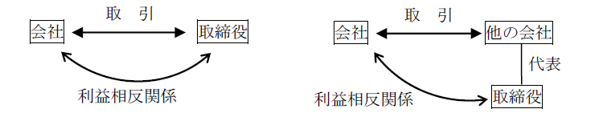
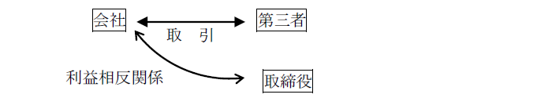
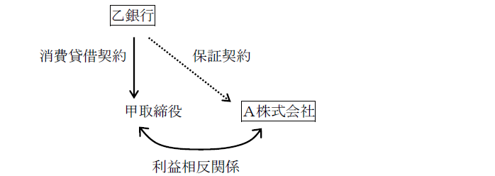

第２編 株式会社
第２章 機関
第３節 役員（取締役、取締役会、代表取締役）
Ⅳ 代表取締役
代表取締役は、株式会社を代表する機関である（会社法349条1項、3項）。
※外国人を代表取締役とすることの可否
外国人を代表取締役とすることはできる。すべての代表取締役が外国人でもよい。
さらに、代表取締役の全員が日本に住所を有しなくてもよい（平27.3.16民商29）。通信技術が発達した現在は、外国にいながら日本にテレビ電話やメールで指示を出すこともできるからである。
1. 選任手続
(1) 取締役会非設置会社
原則：各取締役が代表取締役となる（会社法349条1項本文、2項）。
例外：次に掲げる方法により、取締役の中から代表取締役を定めることができる（会社法349条3項）。
| ①定款 |
| ②定款の定めに基づく取締役の互選 |
| ③株主総会の決議（普通決議） |
(2) 取締役会設置会社
取締役会設置会社では、取締役会がその決議によって、取締役の中から代表取締役を選定する（会社法362条2項3号、3項）。
2. 員数
員数は1人でも複数でもよい。通常は定款でその員数が定められている。
1. 取締役の地位を失った場合
代表取締役の地位は、取締役の地位を前提とするものなので（会社法349条1項、2項、362条3項）、任期満了、辞任、解任あるいは資格喪失等によって取締役としての地位を失えば、当然に代表取締役としての地位も失うことになる。
※特に定款又は選任決議で定めない限り、代表取締役固有の任期は存在しない。
2. 代表取締役の地位のみの辞任の可否
| 選定方法 | 代取の地位のみの 辞任の可否 |
| 各自代表 | ×（※1） |
| 定款または株主総会で選定 | △（※2） |
| 定款の定めに基づく取締役の互選で選定 | ○（※3） |
| 取締役会で選定（取締役会設置会社のみ） | ○（※3） |
※1 取締役の地位と代表取締役の地位が分離していないため
※2 株式会社の一方的な意思表示により代表取締役が選ばれているため、代表取締役の地位のみを辞するには、定款変更又は株主総会の決議を要する（登研432P.130、597P.126、646P.120）。
※3 取締役の地位と代表取締役の地位が分離しているため
1. 業務執行権
執行機関として内部的・対外的な業務執行権限を有する（会社法363条1項1号）。株主総会決議・取締役会決議で決められた事項をそのまま執行するほか、取締役会から委譲された範囲内の事項については、自ら意思決定をして、執行する。また、日常業務について決定する権限も、その選定によって、当然委任されたものと推定できる。
2. 代表権
(1) 意義
代表取締役は、株式会社を代表する権限（代表権）を有する。
ex. Ａ（甲株式会社の代表取締役）が第三者Ｂとした行為の効果は、Ａ自身ではなく甲株式会社に帰属する権限
(2) 包括的権限
代表取締役は、株式会社の業務に関する一切の裁判上又は裁判外の行為をする権限を有する（会社法349条4項）。
(3) 不可制限的権限
代表取締役の代表権に制限を加えても、この制限を善意の第三者に対抗することができない（会社法349条5項）。
ex. 取締役会の決議により、代表取締役の権限を一定地域の営業に制限しても、善意の第三者に対してこの制限を主張することはできない。
1. 意義
社長、副社長、その他株式会社を代表する権限を有すると認められるべき名称を付した取締役のした行為については、その者が代表権を有しない場合でも、株式会社は善意の第三者に対してその責任を負う（会社法354条）。
このように代表権を有しなくとも、外観上代表取締役として取り扱われる者を「表見代表取締役」という。
2. 趣旨
代表取締役は登記簿に載るが、代表取締役としての登記がなされていなくとも、代表権が与えられていることがあり得る。また、通常、代表権を有すると認められる名称が付されていれば、第三者は代表権があると思って取引してしまう。この虚偽の外観を作出したのは株式会社自身であるので、一種の禁反言の法理又は外観理論に基づき第三者の保護を図る趣旨である。
3. 適用要件
(1) 外観の存在（株式会社を代表する権限を有するものと認められる名称）
(2) 外観への与因
「付した」、すなわち、株式会社が名称の使用を明示又は黙示的に認めた場合に限られ、当該行為者が勝手に使用したにすぎない場合は含まれない。
(3) 外観への信頼（善意・無重過失）
「善意」とは、代表行為をした表見代表取締役につき代表権のないことを知らないことをいう。また、重過失は悪意の場合と同視できるので、無重過失を要する（最判昭52.10.14・通説）。
4. 会社法354条の類推適用
判例は、次のような場合にも会社法354条が類推適用されるとしている。
(1) 株式会社の使用人の場合
平素から株式会社の金銭借入交渉に際し代表取締役社長の了解を得て常務取締役の名称を使用（常務取締役の肩書のある名刺を使用）していた株式会社の使用人にも、本条が類推適用される（最判昭35.10.14）。
(2) 事実上の代表取締役の場合
招集通知漏れのある取締役会で代表取締役に選定された取締役が、代表取締役としてその職務を行ったときは、当該選定行為が取締役会の代表取締役選定決議と認められず無効な場合でも、本条が類推適用される（最判昭56.4.24）。
Ⅴ 取締役と株式会社の関係
取締役は、株式会社と委任関係に立ち（会社法330条）、受任者としての善管注意義務（民法644条）を負う｡すなわち、取締役は、社会通念上、取締役たる地位にある者に通常要求される注意をもってその職務を行うことが要求される。
他方、会社法は、取締役は法令及び定款、並びに株主総会の決議を遵守し、株式会社のため忠実にその職務を遂行する義務を負うと規定している（これを取締役の忠実義務という。会社法355条）。
【競業取引規制及び利益相反取引規制の有無】
| 取締役（356）、執行役（419Ⅱ、356）、清算人（482Ⅳ、356） | ○ |
| 会計参与、監査役、会計監査人 | × |
業務を決定する又は執行する者が規制の対象となっている。
1. 取締役の競業取引の規制（会社法356条1項1号）
(1) 意義
取締役が、自己又は第三者のために株式会社の事業の部類に属する取引をしようとするときは、事前に会社に対し、その取引につき重要な事実を開示し、その承認を受けなければならない（会社法356条1項1号、365条1項）。
ex. 取締役会設置会社である株式会社Ａ商事の取締役Ｘは、Ａ商事の事業である車の販売の事業を始めようとした。この場合、この事業を始めるのに取締役会の承認が必要である。
承認機関
| 取締役会設置会社 | 取締役会非設置会社 |
| 取締役会 | 株主総会 |
なお、取締役が同種の事業を目的とする他社の取締役に就任すること自体は、競業行為には該当しない。
(2) 趣旨
取締役の競業は株式会社のノウハウ、顧客情報等を奪う形で株式会社の利益を害する危険が大きいので、予防的・形式的に規制を加えたものである。
(3) 競業取引の効果
取締役が承認を得ずに競業取引をした場合、それによって株式会社に生じた損害を賠償する義務を負う（会社法423条1項）。
もっとも、株式会社側がこの場合の損害額を立証することは必ずしも容易ではないので、会社法は、取締役が会社法356条1項の規定に違反して取引をしたときは、その取引により取締役又は第三者が得た利益の額が株式会社が被った損害の額と推定されるとしている（会社法423条2項）。
2. 取締役の利益相反取引の規制（会社法356条1項2号、3号）
(1) 意義
以下の場合には、会社の承認を要する（会社法356条1項、365条1項）。
①取締役が自己又は第三者のために株式会社と取引をしようとするとき（会社法356条1項2号、直接取引）
②株式会社が取締役の債務を保証することその他取締役以外の者との間で株式会社と取締役との利益が相反する取引をしようとするとき（会社法356条1項3号、間接取引）
承認機関
| 取締役会設置会社 | 取締役会非設置会社 |
| 取締役会 | 株主総会 |
※一人会社で全株式を所有する取締役と株式会社との取引については承認不要（最判昭45.8.20）
(2) 趣旨
株式会社の利益を犠牲にして自己又は第三者の利益を図るおそれが大きいため、これを会社の監督に服させて、株式会社の利益保護を図ることにある。
(3) 取引の意義・範囲
(a) 判断基準
前述のように、会社法356条1項2号・3号の趣旨は、株式会社の利益を犠牲にして、取締役が自己又は第三者の利益を図ることを防止する点にあるから、形式上も実質上も利益衝突の危険のない以下のような取引については、会社の承認は不要である。
①取締役が株式会社に対して、負担のない贈与や無利息・無担保の貸付をする場合、株式会社の債務を取締役が免除する場合
②取締役が株式会社の債務を引き受ける場合
③運送・保険・預金等のように約款に基づいてする取引（誰が当事者でも同じ条件の定型的なものであり、取締役だからといって特に有利な扱いを予定しない）をする場合
(b) 直接取引
直接取引とは、取締役が「自己又は第三者のために」株式会社とする取引をいう（会社法356条1項2号）。すなわち、取締役が自ら株式会社を相手方として、又は第三者を代理し、若しくは第三者の代表機関として、株式会社と取引する場合をいう。

(c) 間接取引
間接取引とは、株式会社と取締役以外の第三者との間の取引であるが、実質的に株式会社と取締役との利益が相反する取引をいう（会社法356条1項3号）。

ex1. Ａ株式会社の取締役甲が、Ａ株式会社以外の者である乙銀行から借入をしている場合に、Ａ株式会社がこの甲の借入金債務のために、乙銀行と保証契約を締結し、あるいは乙銀行を担保権者とする担保権を設定する行為（物上保証）が間接取引に当たる。

ex2. 株式会社Ａ商事（取締役会設置会社）の代表取締役Ｘが、Ａ商事を代表して、自己が代表取締役を務める株式会社Ｂ物産の債務を保証しようとする場合、Ｘは、Ａ商事の取締役会の承認を受けることを要する。
(4) 利益相反取引の効果
(a) 私法上の効果
会社の承認を得ずにした場合の取引の効力について、判例（最大判昭43.12.25）・通説は、会社法356条1項2号・3号、365条1項違反の行為は、株式会社とその取引の相手方である取締役との間では無効であるが、第三者との関係では、株式会社が、取締役会（株主総会）の承認がないことのほか第三者の悪意を立証しない限り、取引の無効を主張できないとする（相対的無効説）。
(b) 無効の主張権者
利益相反取引の相手方となった取締役が無効を主張できるかについて、判例（最判昭48.12.11）は、本規定は株式会社の利益保護の規定であるから、認めるべきでないとする。
(c) 取締役の責任
ⅰ 責任を負う者
①承認を得なかった場合に責任を負う者
株式会社の承認を得ないで行われた利益相反取引により株式会社に損害が生じた場合には、その取締役及び株式会社を代表した取締役は、株式会社に対して損害賠償責任を負う（会社法423条1項）。この責任は連帯責任である（会社法430条）。
②承認を得た場合に責任を負う者
株式会社の承認を得た場合であっても、利益相反取引によって株式会社に損害が生じたときは、以下の者は、その任務を怠ったものと推定される（会社法423条3項）。
①株式会社との間で利益相反取引を行った取締役
②株式会社が利益相反取引をすることを決定した取締役
③その取引に関する取締役会の承認決議に賛成した取締役
※監査等委員会設置会社の特則
取締役会の承認を受けた取締役（監査等委員であるものを除く）の利益相反取引について、監査等委員会が承認した場合には、上記任務懈怠推定規定の適用が排除される（会社法423条4項）。
ⅱ 責任の内容
この責任は、会社法では、任務懈怠責任の1つとして位置付けられ（会社法423条）、株主総会の特別決議又は定款の定めがある場合の取締役会決議ないしは責任限定契約による責任の一部免除の対象となる（会社法425条～427条）。
上記の者の責任は、過失責任である。
ただし、自己のために株式会社と直接利益相反取引をした取締役は、任務を怠ったことがその取締役の責めに帰することができない事由によるものであっても、株式会社に対する損害賠償責任を免れることができず（無過失責任）、この責任は一部免除等の対象とはならない（会社法428条）。
なお、たとえ自己のために株式会社と直接利益相反取引をした取締役であっても、総株主の同意による責任の全部の免除は認められる（会社法424条）。
1. 取締役の報酬の決定
取締役の報酬等（報酬、賞与その他の職務執行の対価として株式会社から受ける財産上の利益）は、取締役自身が決定できるとすると、お手盛の危険が生じ、株式会社の財産的基礎が危うくなるおそれが生じるため、取締役の報酬等については、以下の決議によって定めるものとした（会社法361条1項）。
| 決定機関 | 定款又は株主総会決議（会社法361条1項） ※ → 取締役全員に対する報酬等の総額又は最高限度額を定めればよい。 |
| 配分の委任 | 個別の支給額は取締役の決定に委ねることができる（最判昭60.3.26） |
※ 決議によって定める事項（会社法361条1項各号）
①額が確定しているものについては、その額
②額が確定していないものについては、その具体的な算定方法
③当該株式会社の募集株式については、当該募集株式の数の上限等（※）
④当該株式会社の新株予約権については、当該募集新株予約権の数の上限等（※）
⑤募集株式又は募集新株予約権と引き換えにする払込みに充てるための金銭については、取締役が引き受ける当該募集株式（募集新株予約権）の数の上限等（※）
⑥金銭でないもの（上記③④を除く。）については、その具体的な内容
2. 決定に関する方針として定める事項の決定（会社法361条7項）
各取締役の報酬の透明性・公正性を確保する必要があるため、一定の会社における取締役の報酬等の決定方針についての規定が置かれた。
以下の要件に該当する会社において、取締役（監査等委員である取締役を除く。）の報酬等の内容として定款又は株主総会の決議による361条1項各号（上記※①～⑥）の事項についての定めがある場合には、当該定めに基づく取締役の個人別の報酬等の内容についての決定に関する方針として法務省令で定める事項を取締役会で決定しなければならない（会社法361条7項）。
| ① 監査役会設置会社（公開会社であり、かつ、大会社に限る。）であって、金融商品取引法24Ⅰの規定により発行する株式について有価証券報告書を内閣総理大臣に提出しなければならない会社 |
| ② 監査等委員会設置会社 |
※ 取締役の個別の報酬等が定款又は株主総会決議で定められている場合には、当該決定は不要（会社法361条7項ただし書）